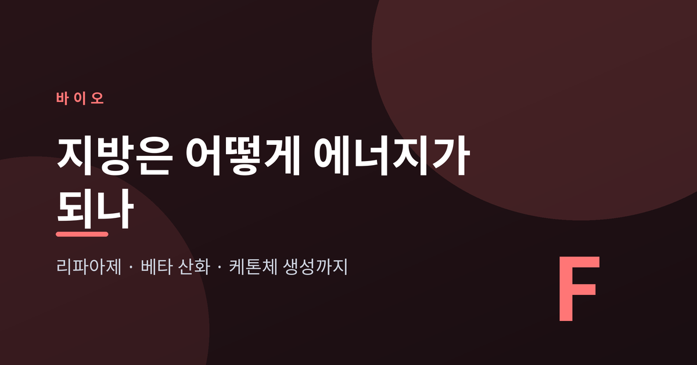
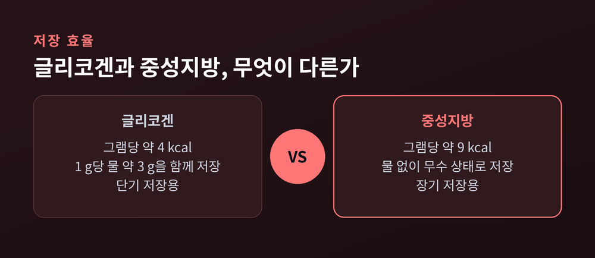
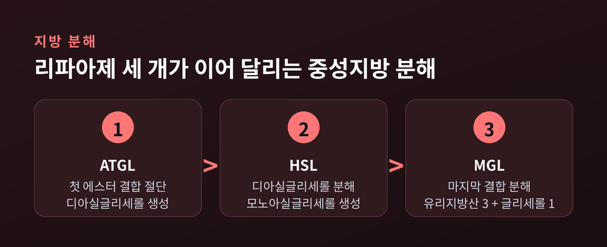
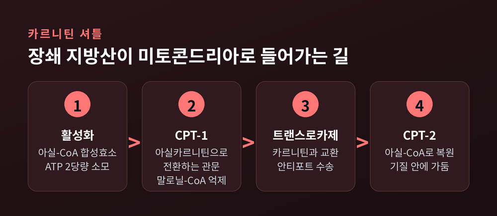
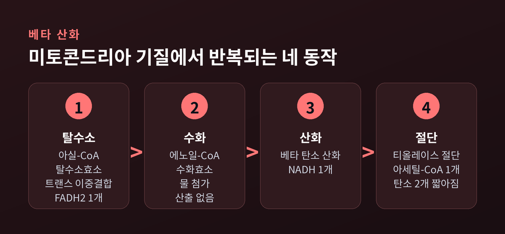
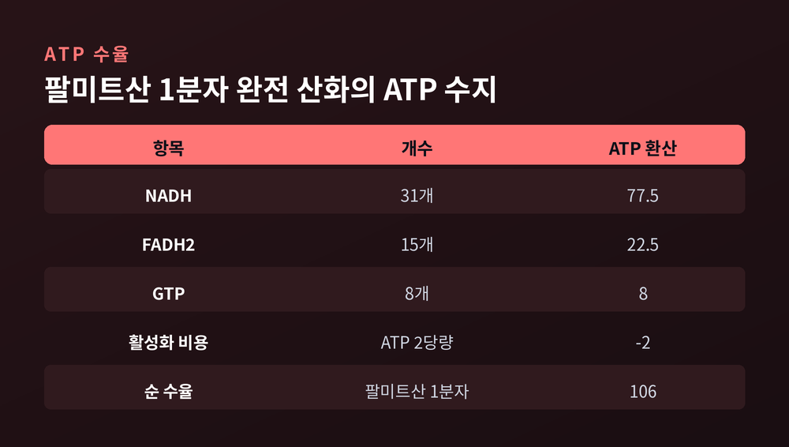
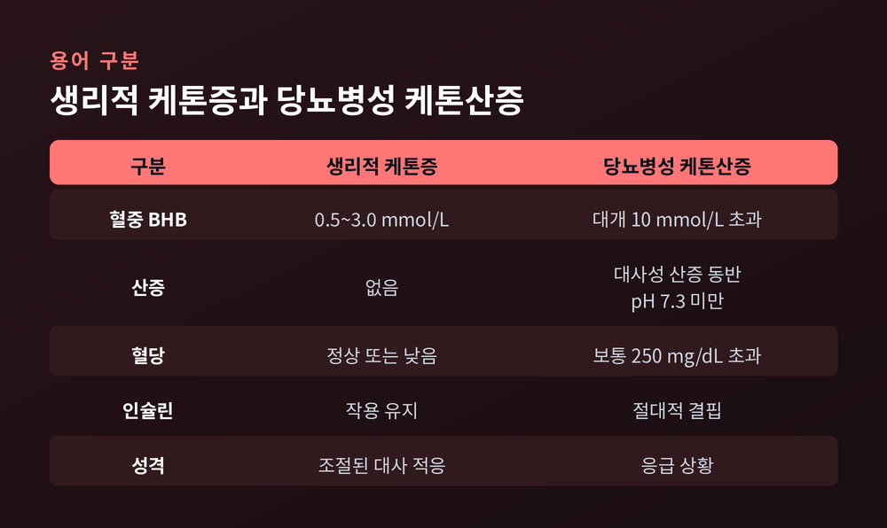

지방 대사 과정, 리파아제부터 베타 산화와 케톤체까지 정리

이번 글에서는 몸에 저장된 지방이 어떤 경로를 거쳐 에너지가 되는지 정리해 보겠습니다. 지방 분해에서 시작해 베타 산화를 지나 케톤체 생성까지, 각 단계에서 실제로 어떤 효소가 무엇을 하는지 따라가 보려 합니다.
세 줄 요약
- 지방조직의 중성지방은 ATGL·HSL·MGL 세 리파아제가 차례로 잘라 유리지방산과 글리세롤로 내보냅니다.
- 지방산은 알부민에 실려 이동한 뒤 카르니틴 셔틀을 통과해야 미토콘드리아로 들어갑니다. 이 관문을 지키는 것이 CPT-1이고, 그 브레이크가 말로닐-CoA입니다.
- 미토콘드리아 안에서는 네 동작짜리 베타 산화가 반복됩니다. 팔미트산 한 분자는 순 106 ATP를 냅니다. 간에서 남아도는 아세틸-CoA는 케톤체가 되어 뇌로 갑니다.
몸이 지방을 장기 저장 연료로 고른 이유
먼저 저장 방식부터 보겠습니다.
중성지방은 산화될 때 그램당 약 9 kcal를 냅니다. 글리코겐은 약 4 kcal입니다. 두 배가 넘는 차이입니다.
차이는 여기서 끝나지 않습니다. 글리코겐은 1 g당 약 3 g의 물을 함께 끌고 저장됩니다. 지방은 물 없이 저장됩니다. 실제 무게로 환산하면 격차는 훨씬 벌어집니다.
이유는 화학 구조에 있습니다. 지방산 사슬은 C–H 결합이 길게 이어진, 고도로 환원된 구조입니다. 탄수화물은 이미 C–O 결합으로 부분 산화되어 있습니다. C–H 결합이 많다는 것은 전자전달계에 넘길 전자가 많다는 뜻입니다.
그래서 역할이 갈립니다. 글리코겐은 단기 저장, 중성지방은 장기 저장입니다.

지방을 꺼내는 일은 리파아제 세 개의 계주입니다
지방세포 안의 중성지방은 지방방울(lipid droplet)에 뭉쳐 있습니다. 이것을 꺼내려면 효소 세 개가 순서대로 일해야 합니다.
첫 주자는 ATGL(지방조직 중성지방 리파아제)입니다. 중성지방의 첫 번째 에스터 결합을 끊어 디아실글리세롤을 만듭니다.
두 번째는 HSL(호르몬 민감성 리파아제)입니다. 디아실글리세롤을 모노아실글리세롤로 바꿉니다.
마지막은 MGL(모노아실글리세롤 리파아제)입니다. 남은 결합을 끊습니다.
결과는 단순합니다. 중성지방 한 분자에서 유리지방산 세 분자와 글리세롤 한 분자가 나옵니다.

떨어져 나온 글리세롤도 버려지지 않습니다. 글리세롤-3-인산을 거쳐 DHAP가 되고, 해당과정으로 합류합니다. 간에서는 포도당 신생합성의 재료가 됩니다.
한 가지 덧붙이면, 이 그림은 비교적 최근에 정리된 것입니다. 예전에는 HSL 하나가 지방 동원의 율속 효소라고 여겨졌습니다. 지금은 ATGL과 HSL이 함께 조절한다고 봅니다. 다만 사람의 지방세포에서 카테콜아민이 유도하는 지방 분해에는 HSL의 기여가 더 크다는 보고도 있어, 두 효소의 상대적 비중은 조건에 따라 달라집니다.
인슐린과 카테콜아민이 스위치를 나눠 쥡니다
지방 분해에서 가장 잘 밝혀진 조절은 두 신호의 대립입니다.
카테콜아민, 곧 에피네프린과 노르에피네프린은 지방 분해를 켭니다. 방식은 PKA(단백질 인산화효소 A) 의존적 인산화입니다. 페릴리핀-1, CGI-58, HSL이 인산화되면 두 가지 일이 일어납니다. ATGL이 지방방울 위에서 CGI-58과 결합하고, 세포질에 있던 HSL이 지방방울 표면으로 옮겨 갑니다.
인슐린은 반대편입니다. 식후 높아진 인슐린은 지방 분해를 억제하고 지방산 합성을 촉진합니다.
공복에는 HSL을 켜는 호르몬이 넷으로 늘어납니다. 글루카곤과 에피네프린은 cAMP–PKA 경로를 씁니다. 코르티솔은 GR-alpha에 결합해 Angptl4 전사를 늘리고, 이 단백질이 cAMP 의존 PKA 신호를 자극합니다. 성장호르몬은 PLC–PKC 경로를 거칩니다.
경로는 다르지만 도착지는 같습니다. 저장고를 연다는 것입니다.
알부민이라는 운반차
혈액은 물입니다. 지방산은 물에 잘 녹지 않습니다. 그래서 운반차가 필요합니다.
그 역할을 혈청 알부민이 맡습니다. 알부민에는 결합 자리가 여러 개 있고, 이 자리들은 서로 독립적이지 않습니다. 한 물질의 결합이 다른 물질의 결합에 영향을 주는 알로스테릭 관계입니다.
알부민은 단순한 짐꾼이 아닙니다. 혈중 유리지방산의 유량 자체를 결정하는 인자로 보고됩니다. 다만 이 그림에도 이견은 있습니다. 지단백 분해로 생긴 지방산의 상당 부분이 알부민이 아니라 지단백 분획으로 분배된다는 실험 결과도 있습니다. 아직 한 가지로 정리되지는 않았습니다.
세포 안으로 들어갈 때는 막 지방산 결합 단백질이 매개하는 수송 기전을 씁니다.
미토콘드리아 문 앞의 검문소, 카르니틴 셔틀
지방산이 혈관을 타고 근육이나 간에 도착했다고 바로 태워지는 것은 아닙니다. 연소 장소인 미토콘드리아 기질까지 들어가야 합니다. 그런데 장쇄 지방산은 미토콘드리아 막을 그냥 통과하지 못합니다.
순서는 이렇습니다.
먼저 활성화입니다. 아실-CoA 합성효소가 지방산과 CoA 사이에 티오에스터 결합을 만듭니다. 여기에 ATP 2당량이 듭니다. 이 비용은 뒤의 수지 계산에서 그대로 빠집니다.
다음이 관문입니다. CPT-1(카르니틴 팔미토일전이효소 I)이 아실-CoA를 아실카르니틴으로 바꾸며 통과시킵니다. 이 단계가 미토콘드리아 지방산 산화의 율속 단계입니다.
이어서 카르니틴:아실카르니틴 트랜스로카제가 아실카르니틴을 카르니틴과 맞바꾸는 안티포트 방식으로 기질 안에 들여보냅니다. 마지막으로 CPT-2가 아실카르니틴을 다시 아실-CoA로 되돌려 기질 안에 가둡니다.

이 검문소에는 브레이크가 하나 달려 있습니다. 말로닐-CoA입니다. 말로닐-CoA는 CPT-1을 억제합니다. 그래서 지방산 산화를 직접 통제하는 1차 조절자가 됩니다.
작동은 직관적입니다. 식후에는 말로닐-CoA가 높아 CPT-1이 눌립니다. 지방산은 문 앞에서 돌아섭니다. 공복에는 말로닐-CoA가 떨어지고 억제가 풀립니다. 그제야 지방산이 안으로 밀려 들어갑니다.
인슐린과도 연결됩니다. 인슐린 신호가 약해지면 아세틸-CoA 카복실화효소 활성이 줄고, 말로닐-CoA 합성이 줄고, CPT-1의 억제가 풀립니다.
참고로 탄소 24~26개짜리 초장쇄 지방산은 이 셔틀을 쓰지 않습니다. ABCD1-3 수송체로 퍼옥시좀에 들어갑니다.
베타 산화는 같은 네 동작의 반복입니다
미토콘드리아 기질에 들어온 아실-CoA는 네 동작을 반복하며 짧아집니다. 산화, 수화, 산화, 절단입니다.
1단계는 아실-CoA 탈수소효소입니다. 알파 탄소와 베타 탄소 사이에 트랜스 이중결합을 만듭니다. 이때 FADH2 한 개가 나옵니다. 전자전달계에서 ATP 1.5개 값입니다.
2단계는 에노일-CoA 수화효소입니다. 그 이중결합에 물을 붙입니다. 이 단계에서 나오는 에너지는 없습니다.
3단계는 베타-하이드록시아실-CoA 탈수소효소입니다. 베타 탄소의 수산기를 산화합니다. NADH 한 개가 나옵니다. ATP 2.5개 값입니다.
4단계는 베타-케토티올레이스입니다. CoA가 알파–베타 결합을 끊습니다. 아세틸-CoA 한 개와, 탄소 두 개가 짧아진 아실-CoA가 남습니다.

그리고 처음으로 돌아갑니다. 한 바퀴가 4 ATP 당량과 아세틸-CoA 한 개를 냅니다.
물론 모든 지방산이 이렇게 깔끔하지는 않습니다. 불포화 지방산은 시스 이중결합을 트랜스로 바꾸거나 NADPH를 써서 환원하는 효소가 더 필요합니다. 홀수 탄소 지방산은 마지막에 프로피오닐-CoA를 남기고, 이것이 숙시닐-CoA로 바뀌어 TCA 회로에 붙습니다.
아세틸-CoA의 행선지는 조직에 따라 갈립니다. 골격근과 심근에서는 TCA 회로로 들어가 ATP가 됩니다. 간세포에서는 사정이 다른데요. 뒤에서 다시 보겠습니다.
팔미트산 한 분자가 내는 ATP
탄소 16개짜리 팔미트산으로 수지를 맞춰 보겠습니다.
베타 산화를 일곱 번 돌면 아세틸-CoA 8개, NADH 7개, FADH2 7개가 나옵니다. 아세틸-CoA 8개가 TCA 회로로 들어가면 NADH 24개, FADH2 8개, GTP 8개가 추가됩니다.
합치면 NADH 31개, FADH2 15개, GTP 8개입니다.

환산하면 이렇습니다. NADH 31개는 77.5 ATP, FADH2 15개는 22.5 ATP, GTP 8개는 8 ATP입니다. 총 108 ATP입니다. 여기서 앞서 쓴 활성화 비용 2 ATP를 뺍니다. 순 106 ATP입니다.
수치를 볼 때 유의할 점이 하나 있습니다. 오래된 교과서는 NADH를 3 ATP, FADH2를 2 ATP로 계산해 129~131이라는 값을 제시합니다. 현대 교재는 양성자 누출과 수송 비용을 반영해 2.5와 1.5를 씁니다. 둘 다 문헌에 있으므로 어느 기준인지 확인하고 읽는 편이 좋겠습니다.
간이 만들고 간은 쓰지 못하는 연료, 케톤체
공복이 길어지면 간에 지방산이 몰립니다. 베타 산화가 활발해지고 아세틸-CoA가 쌓입니다.
그런데 같은 시기에 간은 포도당 신생합성으로 바쁩니다. 그 과정에서 TCA 회로의 필수 중간체인 옥살아세트산이 포도당 쪽으로 빠져나갑니다. 회로의 유량이 줄어듭니다.
들어오는 아세틸-CoA는 많은데 태울 회로가 막힌 상태입니다. 이 병목이 케톤체 생성의 출발점입니다.
경로는 효소 세 개입니다. 티올레이스가 아세틸-CoA 두 분자를 붙여 아세토아세틸-CoA를 만듭니다. HMG-CoA 합성효소가 여기에 아세틸-CoA를 하나 더 붙여 HMG-CoA를 만듭니다. 이 단계가 율속 단계입니다. 마지막으로 HMG-CoA 리아제가 잘라 아세토아세트산을 냅니다.
아세토아세트산은 두 갈래로 갑니다. 환원되면 베타-하이드록시부티르산이 되고, 탈탄산되면 아세톤이 됩니다. 아세톤은 미량 부산물이고 대부분 호흡으로 빠져나갑니다.
여기서 눈에 띄는 대목이 있습니다. 간세포에는 티오포라제가 없습니다. 케톤체를 다시 아세틸-CoA로 되돌리는 효소입니다. 그래서 간은 자기가 만든 케톤체를 쓰지 못합니다. 케톤체는 처음부터 수출용입니다.
받는 쪽은 뇌, 심장, 골격근, 신장입니다. 특히 뇌가 중요합니다. 장쇄 지방산과 달리 케톤체는 혈액뇌장벽을 쉽게 통과합니다. 뇌는 평소 포도당에 의존하지만, 장기 공복에서는 케톤체가 주된 대체 연료가 됩니다. Owen 등의 고전적인 연구를 인용한 자료들은 그 비중을 최대 60% 안팎으로 봅니다. 자료에 따라 3분의 2까지 제시하기도 해, 단일 수치로 단정하기는 어렵습니다.
공복이 길어지면 연료가 순서대로 바뀝니다
시간 순서로 정리하면 이렇습니다.
식후 몇 시간은 마지막 식사에서 온 포도당을 씁니다. 4~6시간이 지나면 포도당 신생합성이 시작됩니다. 첫 24시간 동안 혈당 유지의 주력은 간 글리코겐입니다. 표준 식단에서는 대략 18~24시간 사이에 간 글리코겐이 상당히 고갈됩니다.
그 뒤가 전환점입니다. 몸은 지방조직과 단백질 저장고를 쓰기 시작합니다. 측정 가능한 케톤증은 대체로 12~48시간 사이에 나타납니다. 다만 이 시점은 사람마다 다릅니다. 직전 탄수화물 섭취량, 활동량, 대사 이력에 따라 편차가 큽니다.
48시간을 넘기면 케톤 생성이 더 고조됩니다. 2주 이상의 기아 상태에서는 포도당 신생합성이 오히려 줄고 뇌의 케톤 소비가 늘어납니다.
이 전환에는 분명한 이득이 있습니다. 케톤체를 쓸수록 포도당 의존도가 낮아지고, 그만큼 근육 단백질을 덜 헐어 씁니다. 지방산 산화가 골격근과 심근, 신장의 에너지를 대신 대 주는 덕분입니다.
케톤증과 케톤산증은 다른 말입니다
마지막으로 자주 뒤섞이는 두 용어를 구분하겠습니다.
생리적·영양적 케톤증에서 혈중 베타-하이드록시부티르산은 대개 0.5~3.0 mmol/L 범위입니다. 치료 목적으로는 5.0 mmol/L까지 보는 자료도 있습니다.
당뇨병성 케톤산증(DKA)은 통상 10 mmol/L를 넘습니다. 그러나 결정적인 차이는 농도가 아닙니다.

DKA는 케톤 수치만으로 정의되지 않습니다. 혈액 pH 7.3 미만, 또는 중탄산염 18 mEq/L 미만의 대사성 산증이 함께 있어야 합니다. 기전은 절대적 인슐린 결핍입니다. 세포가 포도당을 못 쓰니 지방 분해가 제동 없이 돌아가고, 산성 케톤체가 혈액의 완충 능력을 넘어섭니다.
그래서 DKA에서는 혈당이 보통 250 mg/dL를 크게 넘고, 삼투성 이뇨로 심한 탈수가 옵니다. 쿠스마울 호흡, 아세톤에 의한 과일향 호기, 오심과 복통이 나타납니다.
같은 케톤체라도 조절된 상태에서 나온 것과 조절이 무너져 나온 것은 전혀 다릅니다. 숫자만 보고 판단할 수 없는 이유가 여기 있습니다.
정리하면 이렇습니다.
지방이 에너지가 되는 길은 한 번의 반응이 아니라 긴 릴레이입니다. 리파아제 세 개가 저장고를 열고, 알부민이 실어 나르고, CPT-1이 문을 열어 주고, 베타 산화가 네 동작을 반복하고, 남는 아세틸-CoA는 케톤체가 되어 뇌로 갑니다. 각 구간마다 별도의 조절 장치가 붙어 있습니다.
"몸은 지방을 태우는 것이 아니라, 단계마다 허락을 받아 가며 옮긴다."
이 글에서 다루지 못한 것도 많습니다. 갈색지방의 열 발생, 운동 강도에 따른 연료 선택, 개인차의 유전적 배경은 각각 따로 다뤄야 할 주제입니다.
한 가지만 덧붙이겠습니다. 이 글은 생리학 원리를 설명한 것이지 의학적 조언이 아닙니다. 공복이나 식이 조절, 체중 관리, 혈당과 케톤 수치에 관한 개인의 판단은 전문의와 상담하시길 권합니다. 특히 당뇨가 있거나 약을 복용 중이시라면 더욱 그렇습니다.
경로를 알면 몸이 다르게 보이냐고 물으신다면, 저는 그렇다고 답하겠습니다. 적어도 배가 고픈 순간에 몸 안에서 무슨 일이 벌어지는지는, 이제 짐작할 수 있게 되었으니까요.